Up to date as of 9/08/2025
Upcoming Events
Baldy 111
First Meeting of the Semester
Tuesday, September 9th, 6:30pm
Our first meeting of the semester is tomorrow, Tuesday, September 9th, at 6:30pm in Baldy 111. It will be an intro to the club, our plans for the semester, talk about recent news in tech, with time for general conversation. Feel free to come by, also with any topics you want to discuss! Looking forward to seeing those who can make it!
Past Events
Spring 2025
Baldy 119
Last Day of Classes Jeopardy for Spring 2025
Apr 30th, 4:30pm
Join us to answer a variety of SoCo, Buffalo, and random trivia questions. Winners will have first dibs on some SEAS merch that we'll be giving away, so be sure to stop by and bring a friend! We will also have pizza! Also, we're proud to announce that we have finalized our new Eboard for the next academic year: President Shivansh Shalabh, Vice-President Sameer Jain, Events Chair Luke Hauser-Howells, Outreach Chair Ved Joshi. This group will work to make SoCo a greater club in the coming semesters. We hope to see you there to take a well-deserved break before finals!
O'Brian 209
Movie Night: The Imitation Game with MakeOpenSource
Apr 18th, 5:00pm
Join SoCo and MakeOpenSource to watch The Imitation Game - A movie about the life and work of computer scientist Alan Turing. Snacks will be served. We hope to see you there!
Lockwood 205
Speaker Series: Charles Logan
Mar 14th, 12:00pm
Speaker Charles Logan will be sharing his research on how youth are responding to the possibilities and harms that come with Generative AI. Learn more · Register here.
Davis 101
TechBuffalo Visit / Last Day of Classes Jeopardy
Feb 14th, 6:00pm
TechBuffalo is an org that helps recruit students for tech internships with Buffalo-based companies. They have an internship job board and a program called "PowerUpTech" for skill development. TechBuffalo visited Friday, 6:00pm in Davis 101. ACM mentioned internship application tips and resume review workshop after. There were snacks!
Baldy 111
Welcome Back meeting of Spring 2025
Dec 5th, 4:30pm
Stop by for a (re)introduction to SoCo, to hear about our plans for the semester, and chat about relevant topics over pizza! We hope to see you there.
Fall 2024
Baldy 119
Last Day of Classes Jeopardy
Dec 12th, 6:30pm
Our last event of the semester. Stop by for a well-deserved break before finals. Answer some questions, win some prizes, and enjoy some pizza! We also talked about Eboard recruiting.
Salvador Lounge in Davis Hall
SEAS Clubsgiving
Nov 15th, 5:00-7:00pm
Stop by for some free Thanksgiving food + dessert, and to mingle with other club participants. Anyone involved with any club was welcome!
O'Brian 209
SoCo x APO presents: The Matrix, Movie Night
Oct 25th, 5:00pm
Movie night cohosted by APO. The Matrix! You heard about both orgs at the beginning. We hope you had a great time!
Baldy 119
Tech Hot Topics
Sep 30th, 6:00pm
Join us as we discuss innovations in technology along with their past, present, and/or future effects on our lives. Topics included AI integration into search engines and consumer software. Topics from previous versions: Apple Vision Pro, OpenAI's Sora video maker, and Neuralink. Food was served.
Baldy 117
First Meeting of the Semester
Sep 6th, 6:00pm
Intro to the club and our plans for the semester, with time for general conversation. We hope you came with topics to discuss!
Spring 2024
Davis 338A
Last Day of Classes Jeopardy, a SoCo classic!
May 5th, 6:00pm
Join SoCo for an end-of-semester game of Jeopardy. Questions about UB and SoCo-related topics. Food and prizes!
Davis 338A
A Discussion on Intersectionality in Tech
Apr 19th, 4:00pm
SoCo and DivTech collab! Topics: technology for social good, how people get interested in tech, how tech relates to your other interests, and more. Free pizza served.
Davis 101
Fireside Chat (CSE Department)
Mar 27th, 6:00-7:00pm
The CSE department held a Fireside Chat on Open Source. Two professors led the conversation and answered questions about using open source software and developing relationships with open source communities. Not affiliated with SoCo.
Davis 338A
GBM Tech Round Table
Mar 7th, 6:00pm
Tech Round Table discussing innovations in technology and their past, present, or future effects. Topics: Apple Vision Pro, OpenAI's Sora, Neuralink, and more. Food was served.
Davis Hall 338A
SoCo Social - First Event of the Semester
Feb 8th, 6:00pm
Spend time with people interested in Society and Computing, learn about our plans for the semester, and enjoy free pizza!
Fall 2023
Baldy 119
Last Day of Classes Jeopardy
Dec 5th, 5:00pm
Join us as we watch the Black Mirror episode "Nosedive" and discuss how the episode relates to society and technology today!
Clemens 19
Coding With Integrity
Nov 3rd, 4:00pm
Collaboration with MakeOpenSource! Discuss why you may need to use code written by others and best practices when doing so. Learn about open source licenses! Food was served.
338A Davis Hall
Watch-Along: Black Mirror - Nosedive
Oct 14th, 6:00pm
Join us as we watch the Black Mirror episode "Nosedive" and discuss how the episode relates to society and technology today!
101 Davis Hall
Pixels or Picasso? Discussing AI art
Sept 13th, 6:30pm
AI art programs like Midjourney and DALL-E have exploded in popularity. Introduction to such tools and discussion about their role in our society.
Spring 2023
101 Davis Hall
SoCo x ACM Fireside Chat
Apr 19th, 6:30pm
Discussions regarding important technological innovations and how they affect our lives! Food and drinks were served.
101 Davis Hall
CSE Club Social
Apr 12th, 6:30pm
Join the various CSE Clubs for a night of networking, chill vibes, and games!
338A Davis Hall
A Brief History of Computing
Mar 29th, 7:30pm
MakeOpenSource and SoCo collaborative presentation on the history of computing! From the original computer to how we use computers today.
113A Davis Hall
Spring Kick-off
Feb 28th, 6:30pm
Meet for a game of Jeopardy to win UB swag! Dinner and good vibes provided.
Fall 2022
338A Davis Hall
Movie Night: The Social Dilemma
Nov 29th, 6:00pm
Joint event with SoCo and ACM! "The Social Dilemma" documentary - a founding inspiration for SoCo as a club.
101 Davis Hall
How to be a Better Ally
Nov 1st, 7:30pm
DivTech and Society & Computing hosted a collaborative event. Make a friend, learn something new!
113A Davis Hall
Investigating the moral mechanisms underlying media's ability to motivate altruism and atrocity – Lindsay Hahn, PhD
Oct 3rd, 5:00pm
From children's stories to terrorist propaganda, creators of morally-laden media have been trying to convince audiences to act in certain ways. This talk reviewed research on moral messages' efficacy, violent behavior, and interventions. Guided by mass communication research, discussion of studies on moral values and decisions to engage in altruism and atrocity.
338A Davis Hall
General Body Meeting
Sept 14th, 6:00pm
Meet for a game of Jeopardy to win UB swag! Dinner and good vibes provided.
Spring 2022
310 Davis Hall
The Other Side of Main Street
May 4th, 6:30pm
Jyla Serfino, a junior at UB, shared her ongoing research about how algorithms have contributed to redlining practices and Buffalo's deep-rooted housing segregation.
338A Davis Hall (In Person & Online)
Industry Panel – PJ Hagerty, Harshita Girase, Nick DiRienzo
April 13th, 5:00pm
Professionals across the nation discussed how technology affects the industry and careers they have immersed themselves in.
338A Davis Hall
Fireside Chat
March 16th, 6:30pm
How do algorithms relate to politics? Healthcare? Homeownership? The environment? Club members shared how algorithms affect their fields & interests. Be ready to learn, listen, & discuss.
338A Davis Hall
General Body Meeting
Feb 16th, 6:30pm
Plans for the semester, including a brand new research component to the club!
Fall 2021
338A Davis Hall
Analyzing COMPASS Predictive Analytics – Ewa Ziarek, PhD
Nov 3rd, 6:30pm
Discussion of COMPASS predictive analytics recidivism score in the context of intersectional analysis of power (race, gender, poverty) and justice.
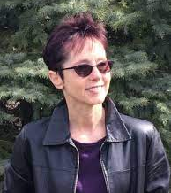
338A Davis Hall
Movie Night: Coded Bias
Oct 27th, 6:30pm
Documentary about biases in various algorithms, particularly regarding facial recognition technology.
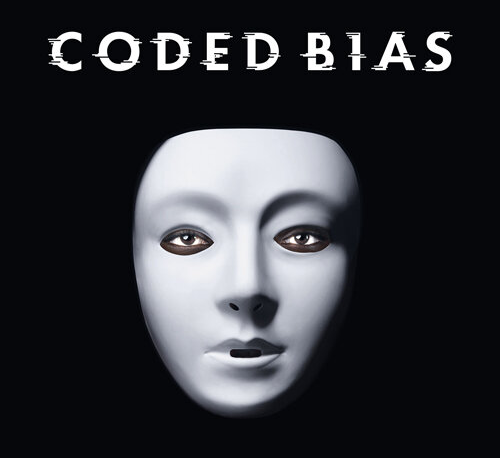
113A Davis Hall
The Analysis Topic Model Network Approach – Yotam Ophir, PhD
Oct 1st, 5:00pm
ANTMN method for inductive, data-driven analysis of big textual data and media frames. Steps: topic modeling, network analysis, community detection. Applicability to vaccines in Russian Twitter propaganda, science on extremism websites.
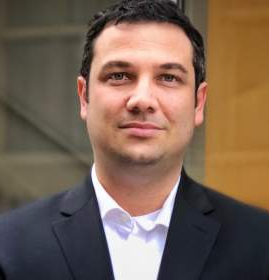
338A Davis Hall
Fighting Fake News – Mark Bartholomew
Sept 22nd, 7:00pm
What is fake news? Is it different than other misinformation? What can be done about it? Definition from consumer protection law and thoughts on remedying disinformation on social media.
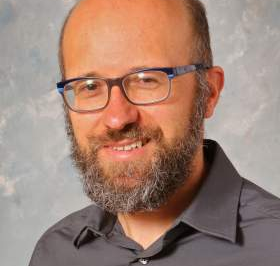
338A Davis Hall
Games!
Sept 15th, 6:30pm
Chill and destress. Games: Jackbox, scribbl.io, Among Us, and more!
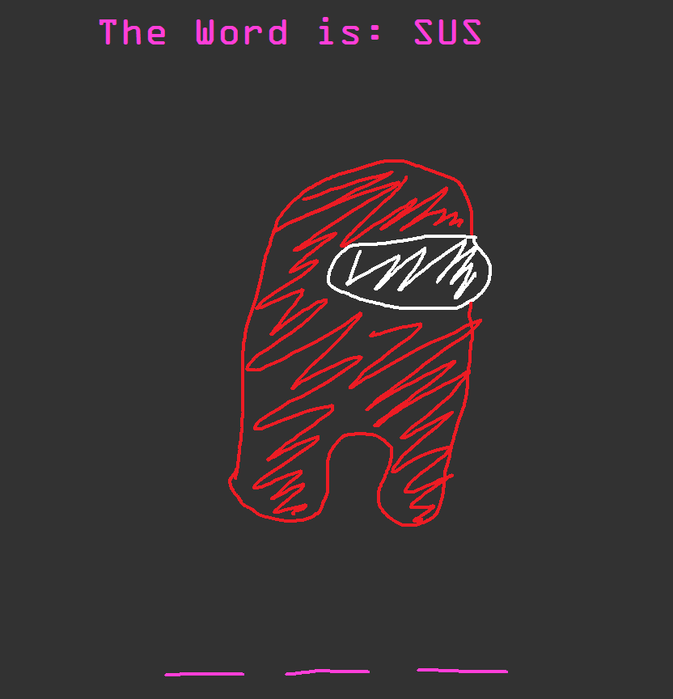
338A Davis Hall
General Body Meeting
Sept 1st, 6:30pm
Get to know our club and members. Debut on-campus, in-person meeting!
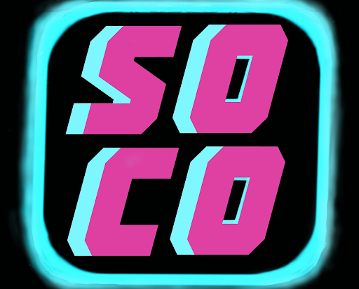
Spring 2021
Online
Algorithmic Bias – Maria Rodriguez, PhD
April 30th, 10:30am
Employing computational methods to support marginalized communities. Problems from foreclosure crisis to algorithmic decision-making in child welfare.
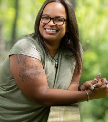
Online
Effects of Mass Media – Lindsay Hahn, PhD
April 29th, 5:00pm
What does it mean for media's effects to be good or bad? Logic from evolutionary psychology. Studies on children's sharing, terrorism, political violence. Plans for study on news about terrorist attacks and support for authoritarian regimes.
Online
Algorithms as Allegories – Macy McDonald (PhD candidate)
April 25th, 4:00pm
Applying narrative criticism to data stories. Using Edgar Allen Poe to think through the COMPASS algorithm. Part of Social Justice Works-in-Progress series.
Online
Games!
April 20th, 2:00pm
Among Us, Avalon, Pictionary, Codenames!
Online
Political Polarization on Social Media – Yini Zhang, PhD
Mar 31st, 7:00pm
Dr. Zhang studies social media and political communication. Public attention and opinion, relationship with journalism and democracy. Assistant professor in Communications at UB.
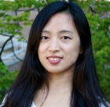
Online
Computation & Bias – Kenny Joseph, PhD
Mar 27th, 2:00pm
Dr. Joseph is in CSE at UB, Computing for Social Good group. Research on dynamics of stereotypes and prejudice, sociocultural structure and behavior.

Online
Coded Bias Discussion
Mar 26th, 7:30pm
Part of Engineers Week. Discussion on the documentary Coded Bias. Viewing link provided prior to discussion.
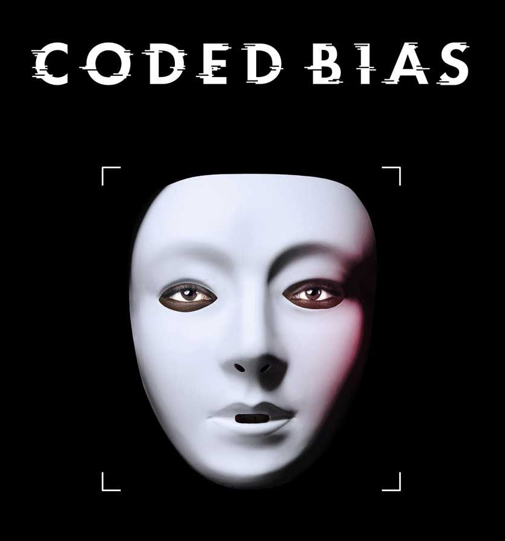
Online
AI and its Limits – Barry Smith, PhD
Mar 13th, 2:00pm
SUNY Distinguished Professor of Philosophy, Director of National Center for Ontological Research. Joint appointments in Biomedical Informatics and CSE at UB.
Online
Social Dilemma Discussion
Feb 26th, 7:00pm
Questions and insights to drive the conversation. Breakout rooms for everyone to contribute.
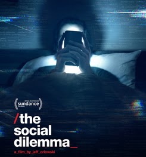
Online
Games!
Feb 13th, 2:00pm
Game Night, introductions, and upcoming events.
Online
General Body Meeting
Jan 9th, 1:00pm
Come see what SoCo is all about!
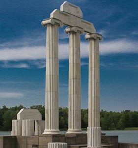